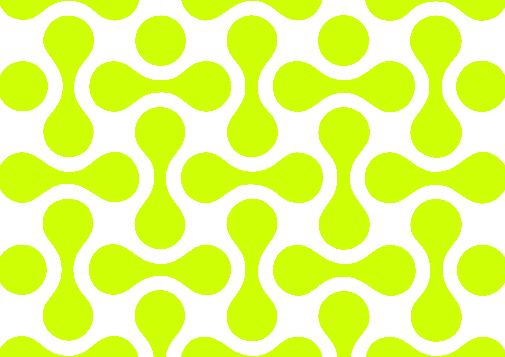

<!DOCTYPE Tailwind>
<tailwind lang="en">
<head>
  <meta charset="UTF-8" />
  <meta name="viewport" content="width=device-width, initial-scale=1.0" />
  <title>Project Documentatie Tailwind</title>
  <script src="https://cdn.tailwindcss.com"></script>
  <link href="https://fonts.googleapis.com/css2?family=JetBrains+Mono:wght@300;400;700&display=swap" rel="stylesheet" />

  <style>
    body {
      font-family: "JetBrains Mono", monospace;
    }

    @keyframes typing {
      from { width: 0 }
      to { width: 100% }
    }

    @keyframes blink {
      0%, 100% { border-color: transparent }
      50% { border-color: #cfff04 }
    }

    .hero-typewriter {
      overflow: hidden;
      border-right: 4px solid #cfff04;
      white-space: pre-line;
      animation:
        typing 2s steps(20, end) forwards,
        blink .7s step-end infinite;
    }
  </style>
</head>

<body class="bg-black text-white m-0">

  <nav class="bg-[#cfff04] rounded-[40px] m-4 px-10 py-4 flex justify-between items-center">
    <div class="text-[22px] font-bold"></div>

    <div class="flex gap-10 items-center">
      <a href="index.html" class="px-7 py-3 font-bold text-[15px] bg-black text-white border-2 border-black rounded-full shadow-[0_6px_0_#1b1b1b] active:translate-y-1 active:shadow-[0_2px_0_#aed403] transition">STARTPAGINA</a>


      <div class="relative group">
        <button class="px-7 py-3 font-bold text-[15px] bg-black text-white border-4 border-black rounded-full shadow-[0_6px_0_#1b1b1b] transition">WEKEN</button>

        <div class="hidden group-hover:flex absolute top-full left-1/2 -translate-x-1/2 flex-col gap-3 p-4 w-[100px] rounded-[30px] bg-transparent z-20">
          <a href="Week 1.html" class="text-center font-bold bg-white text-black rounded-full border-2 border-white shadow-[0_4px_0_#dadada] py-1">1</a>
          <a href="Week 2.html" class="text-center font-bold bg-white text-black rounded-full border-2 border-white shadow-[0_4px_0_#dadada] py-1">2</a>
          <a href="Week 3.html" class="text-center font-bold bg-white text-black rounded-full border-2 border-white shadow-[0_4px_0_#dadada] py-1">3</a>
          <a href="Week 4.html" class="text-center font-bold bg-white text-black rounded-full border-2 border-white shadow-[0_4px_0_#dadada] py-1">4</a>
          <a href="Week 5.html" class="text-center font-bold bg-white text-black rounded-full border-2 border-white shadow-[0_4px_0_#dadada] py-1">5</a>
          <a href="Week 6.html" class="text-center font-bold bg-white text-black rounded-full border-2 border-white shadow-[0_4px_0_#dadada] py-1">6</a>
          <a href="Week 7.html" class="text-center font-bold bg-white text-black rounded-full border-2 border-white shadow-[0_4px_0_#dadada] py-1">7</a>
          <a href="Week 8.html" class="text-center font-bold bg-white text-black rounded-full border-2 border-white shadow-[0_4px_0_#dadada] py-1">8</a>
        </div>
      </div>

    </div>
  </nav>

 
  <div class="relative h-screen w-full overflow-hidden mt-8 rounded-[40px] hero-container"
       style="--overlay-opacity: 0; --blur-amount: 0px;">

   
    

    
    <div class="absolute inset-0 bg-black rounded-[40px]"
         style="opacity: var(--overlay-opacity); transition: opacity .2s linear;"></div>

    
    <h1 class="absolute left-20 top-1/2 -translate-y-1/2 
               text-white text-[90px] font-extrabold leading-[1.1] z-10 hero-typewriter"
        style="width: 0;">
LOST
IN
TRA(I)NSLATION
    </h1>

  </div>


  <div class="max-w-[900px] ml-20 mt-12 p-5 leading-relaxed">
    <h2 class="typewriter text-[#cfff04] text-left text-3xl font-extrabold" data-text="INTRODUCTIE"></h2>

    <p>
      In België doorkruisen treinen taalgrenzen. Een reiziger kan in Antwerpen (Nederlands taalgebied) opstappen
      en reizen naar Luik (Franstalig gebied) of Eupen (Duitstalig gebied). Tijdens deze reis vertrouwen
      passagiers op stationsschermen om correcte, duidelijke en toegankelijke informatie te krijgen. Niet alle
      reizigers delen echter dezelfde moedertaal, wat een uitdaging vormt voor communicatie en bruikbaarheid.
    </p>

    <p class="mt-4">
      Als ontwerpers is je taak om een meertalig informatiesysteem te bedenken dat inspeelt op Belgisch
      taallandschap. Het systeem moet ervoor zorgen dat passagiers—of ze nu Nederlands, Frans, Duits of een
      andere taal spreken—de gepresenteerde informatie eenvoudig kunnen begrijpen en ernaar kunnen handelen.
    </p>

    <p class="mt-4">
      De opdracht draait om het ontwerpen van drie types informatieschermen voor een Belgisch treinstation
      (vertrekborden, perronschermen en passagiers-/wegwijsschermen). Het doel is om essentiële reisinformatie
      (vertrektijden, vertragingen, perronwijzigingen, navigatie) duidelijk, toegankelijk en meertalig (NL/FR/DE)
      te presenteren.
    </p>

    <p class="mt-4">
      Op basis van de bovenstaande vragen is de opdracht om vier types informatieschermen te prototypen voor een
      Belgisch treinstation. Elk prototype moet laten zien hoe jullie ontwerp inspeelt op de uitdagingen van
      meertalige communicatie, toegankelijkheid en bruikbaarheid.
    </p>
  </div>

 
  <script>
    function typeWriter(element, text, speed = 100) {
      let i = 0;
      function typing() {
        if (i < text.length) {
          element.textContent += text.charAt(i);
          i++;
          setTimeout(typing, speed);
        }
      }
      typing();
    }

    const observer = new IntersectionObserver((entries, observer) => {
      entries.forEach(entry => {
        if (entry.isIntersecting) {
          const el = entry.target;
          const text = el.getAttribute('data-text');
          typeWriter(el, text);
          observer.unobserve(el);
        }
      });
    }, { threshold: 0.5 });

    document.querySelectorAll('.typewriter[data-text]').forEach(el => {
      observer.observe(el);
    });
  </script>


  <script>
    const hero = document.querySelector(".hero-container");

    window.addEventListener("scroll", () => {
      const scrollY = window.scrollY;

      
      const fadeDistance = 400;
      const opacity = Math.min(scrollY / fadeDistance, 0.6);
      hero.style.setProperty("--overlay-opacity", opacity);

      
      const blurDistance = 500;
      const blurAmount = Math.min((scrollY / blurDistance) * 8, 8);
      hero.style.setProperty("--blur-amount", `${blurAmount}px`);
    });
  </script>

</body>
</html>
